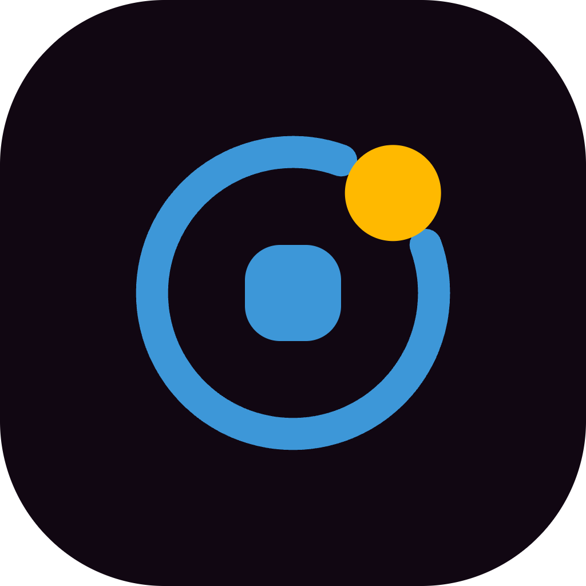

1b Orbit으로 확정했습니다. 아래는 실제 파일을 불러 렌더한 것이므로, 보이는 그대로가 전달 자산입니다. 가이드라인 §02도 이 마크로 갱신했습니다.
기본 가로형 · 192×56 · 최소 폭 122px
세로형 · 160×108 · 명함·배너 정중앙 배치
심볼 단독 · 64 그리드 · 최소 18px
앱·파비콘 · night 배경 · 구조는 #3d97d8로 한 단계 밝힘
단색 · 도장·팩스·1색 인쇄
다크 배경 전용 · 구조 흰색 + 옐로 노드 유지
투명 배경 유지 · 컬러 6종

102416 · 32 · 48 · 64 · 128 · 180 · 192 · 512 · 1024 — iOS·Android·favicon 전 규격
심볼 파일 3종(mark · mono · favicon)은 순수 도형이라 최종본입니다. 반면 워드마크가 들어간 3종은 “Agentro” 글자가 아직 <text> 요소이고 Gowun Batang을 참조합니다 — 폰트가 없는 환경에서는 대체 서체로 렌더됩니다. 배포 전 벡터 편집기에서 글자를 아웃라인(패스)으로 변환해야 합니다. 그 작업은 제가 대신할 수 없습니다.
세 방향 모두 가이드라인 §06의 일러스트 언어(노드 · 궤도 · 연결선)와 §03 컬러 규칙을 지킵니다. 파랑은 구조, 옐로는 사람의 판단 — 이 대응은 세 안에서 동일합니다. 1a · 1b · 1c 로 불러 주세요.
네 개의 구조가 판단을 감싼다
16px에서 블레이드가 2.5px로 뭉갭니다. 16px 이하는 코어만 남긴 단순화 버전이 필요합니다.
기존 마크의 사각 계보를 잇되, 하나의 덩어리를 네 개의 구조로 분해했습니다. 네 블레이드는 §01의 서사 네 단계(맥락 · 판단 · 도구 · 결과)와 정확히 같은 수이고, 가운데 열린 구멍이 사람의 판단 자리입니다. 회전 대칭이라 방향성이 없어 어떤 배치에서도 안정적입니다.
열린 구조를 도는 하나의 판단
16px에서도 코어와 노드의 관계가 남습니다. 세 안 중 소형 내구성이 가장 좋습니다.
§06에 이미 정의한 Orbit 일러스트를 그대로 마크로 올린 안입니다. 문서·웹·발표자료의 배경 그래픽과 로고가 같은 형태 언어를 쓰게 됩니다. 궤도에 낸 틈은 닫힌 자동화가 아니라 사람이 들어오는 열린 구조라는 뜻이고, 옐로 노드는 그 틈에 놓인 판단입니다.
구조를 잇는 사람의 가로대
16px에서 노드와 가로대가 한 덩어리로 붙습니다. 20px 이상 권장.
유일하게 이름을 직접 말하는 안입니다. 두 사선은 스스로 서지 못하고, 옐로 가로대가 둘을 이어야 A가 됩니다 — “판단은 사람이”를 형태의 필연으로 만든 구조입니다. 추상 마크보다 기억·검색·구두 설명이 쉽습니다.